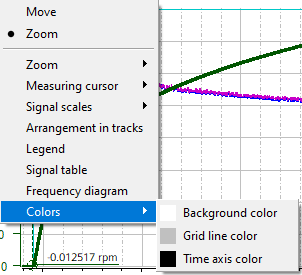

The color of the trace diagram background, the grid lines and the horizontal time axis can be modified via the context menu "Colors". Selecting a menu option opens a color selection dialog.

| Note |
The colors of the signal curves are changed in the signal table. |